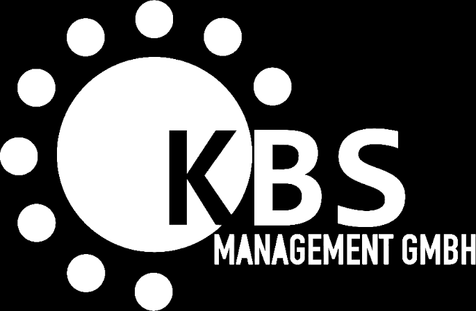

Luis KummerGeschäftsführung
Unternehmen
Wir bauen operative Systeme. Nicht nur Automationen.
HK Growth verbindet Prozessverständnis, Softwareentwicklung, Webseiten und KI-Automation. Der Fokus liegt auf Lösungen, die im Alltag eines Unternehmens nachvollziehbar funktionieren und nicht nur in einer Demo gut aussehen.
Team
Direkte Verantwortung.
Die Ansprechpartner, die Anforderungen verstehen und Entscheidungen treffen, sind direkt im Team. Rollen werden klar getrennt, damit Vertrieb, Umsetzung und Assistenz nicht in einem anonymen Agenturprozess verschwinden.
Nick HinzeGeschäftsführung
Luis GetzVertrieb
Arbeitsweise
Drei Grundsätze.
Technik soll den operativen Ablauf vereinfachen. Deshalb trennen wir bewusst zwischen tatsächlichem Prozessproblem, Automationslogik und möglichen KI-Komponenten.
01
Prozess vor Tool
Wir entscheiden nicht zuerst, welche Software verkauft werden soll, sondern welche Übergabe oder Entscheidung konkret verbessert werden muss.
02
Messbar vor spektakulär
Ein sauberer Status, weniger Nachfragen und eine schnellere Rechnung sind oft wertvoller als eine technisch beeindruckende, aber unnötige KI-Funktion.
03
Menschliche Kontrolle
Freigaben und Entscheidungen bleiben dort beim Menschen, wo Kontext, Verantwortung oder rechtliche Anforderungen dies verlangen.
Ausgewählte Referenzen
Arbeit, die bereits sichtbar ist.
Die Logos zeigen ausgewählte Referenzen und Projekte des Unternehmens. Sie werden bewusst nicht als Beleg für einen bestimmten Automationsumfang dargestellt.

Keine Übergabe an ein anonymes Projektteam.
Wenn ein Prozess technisch und wirtschaftlich sinnvoll wirkt, besprechen Sie ihn direkt mit unserem Team.